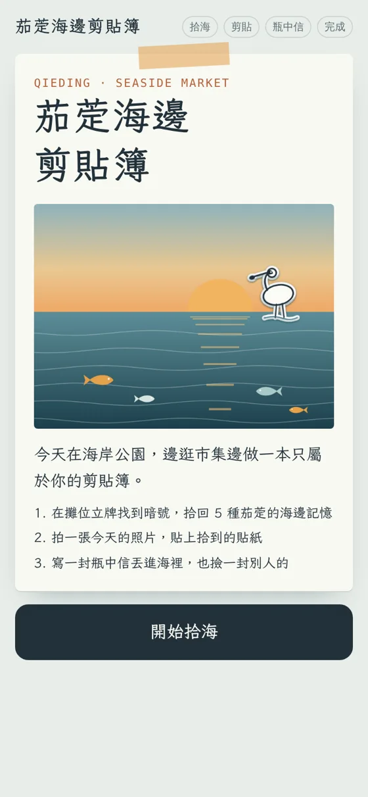
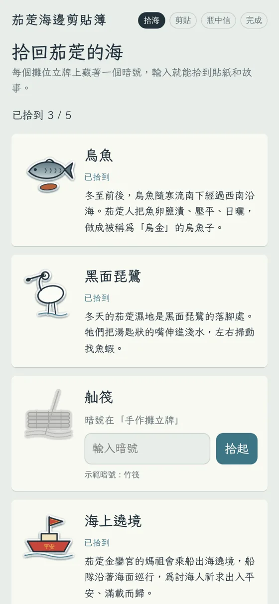
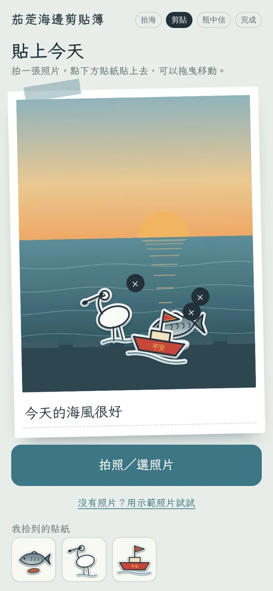
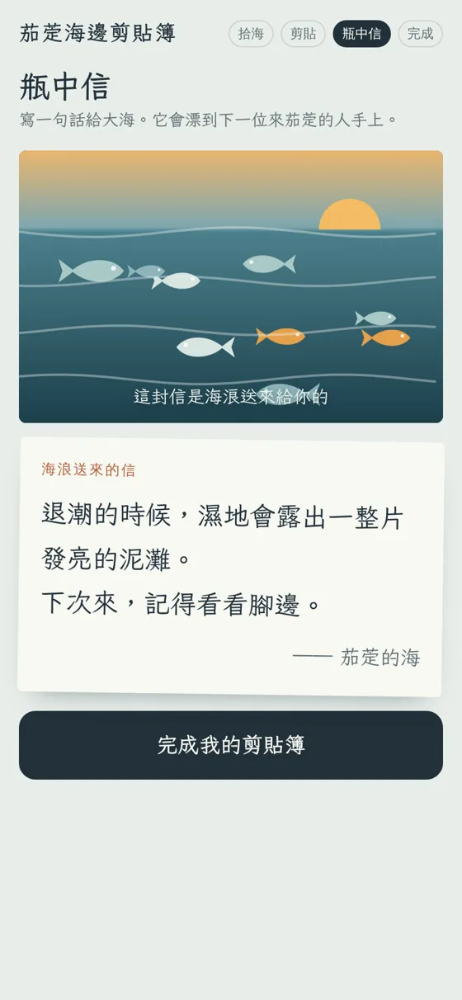
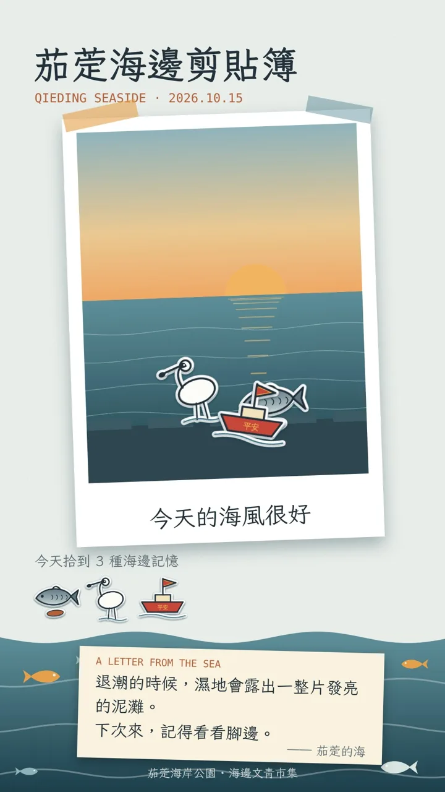

Why not just stamps
不只是集章打卡
集章容易變成跑點蓋章，剪貼簿也容易變成自拍紀念。這個設計的關鍵是：素材要認識在地才拿得到。
01 ／ 暗號在攤位
逼出真正的交流
暗號藏在攤位立牌上，參加者得走近攤位、跟攤主聊兩句，才拿得到貼紙。
02 ／ 貼紙即故事
每張貼紙都是在地知識
烏魚子、黑面琵鷺、舢筏、媽祖海上遶境，拾到貼紙的同時也讀到一段地方故事。
03 ／ 留到傍晚
時段限定，留住人潮
「夕陽」貼紙只在傍晚出現，讓參加者願意多留一會兒，市集也多一段消費時間。
How it works
四個步驟，逛一圈就完成
全程在手機上完成，不需要投影設備或下載 App。

翻開剪貼簿
掃描入口的 QR code，封面就寫好今天要做的三件事。

拾海
在攤位立牌找到暗號，拾回 5 種海邊記憶與故事。

剪貼
拍一張今天的照片，貼上拾到的貼紙，寫一句話。

瓶中信
寫一句話丟進海裡，也撿起另一位旅人留下的信。

For organizers
對主辦單位的好處
- 自帶活動名稱的分享圖卡最後生成 9:16 直式圖卡，適合限時動態，活動名稱跟著被轉發出去。
- 帶動攤商互動暗號放在攤位，人潮自然被帶到每一攤，對攤商和主辦單位都好交代。
- 留下參加者的聲音瓶中信的內容可以整理成活動回饋，放進成果報告。
- 素材留在地方貼紙圖案與故事卡可以和在地文史團體一起整理，活動結束後社區還能繼續使用。
Adaptable
換個地方，換一本剪貼簿
圖案、故事、暗號與配色都依活動重新設計，玩法可以增減。
農村市集老街走讀漁港小旅行部落文化活動社區節慶校園導覽
這是示範版，正式活動會再加上
- 瓶中信改接雲端資料庫，讓參加者真正互相收到彼此的信（示範版從預設的信件中抽取）
- 後台統計參與人次、各攤位解鎖次數，方便寫成果報告
- 故事內容與在地文史團體、產業代表確認後再上線
- 依現場網路狀況調整，訊號不穩也能順利操作